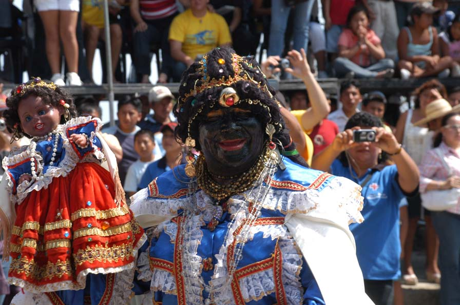
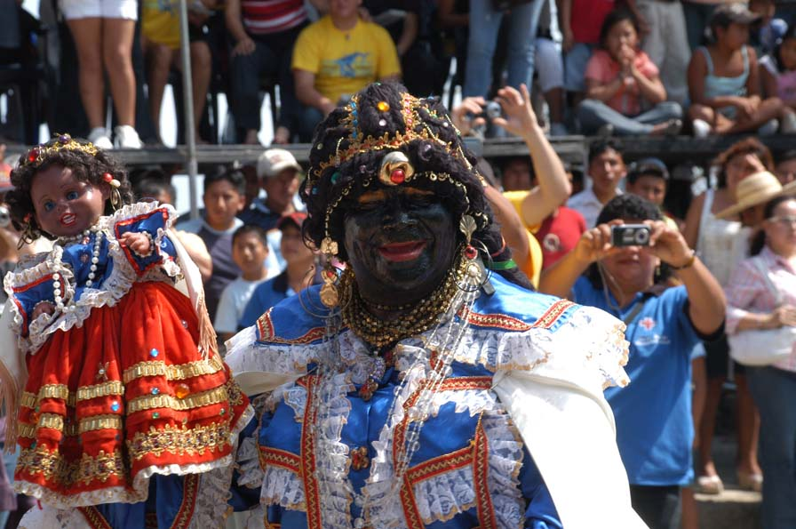

Fiestas de noviembre
En noviembre se celebrará por todo lo alto la famosa fiesta de la Mama Negra. Este es el pretexto perfecto para conocer los encantos de Latacunga.
En noviembre se celebrará por todo lo alto la famosa fiesta de la Mama Negra. Este es el pretexto perfecto para conocer los encantos de Latacunga.
